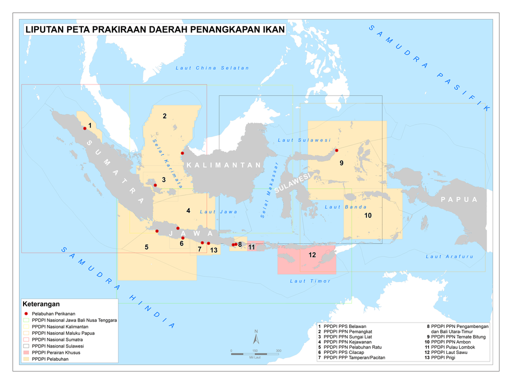

Potensi Perikanan di Indonesia
Perikanan Tangkap
Indonesia memiliki sumber daya ikan melimpah dengan berbagai spesies bernilai ekonomi tinggi.
Perikanan Budidaya
Budidaya ikan seperti udang, lele, dan bandeng menjadi pendorong utama perekonomian lokal.
Tantangan dalam Sistem Perikanan
Penangkapan Berlebihan
Overfishing mengancam keberlanjutan ekosistem laut dan menurunkan populasi ikan.
Pencemaran Laut
Sampah plastik dan limbah industri memberikan dampak negatif pada kualitas perairan.
Perubahan Iklim
Perubahan suhu laut dan cuaca ekstrem memengaruhi habitat ikan dan pola migrasi.
Keberlanjutan dalam Perikanan
Praktik keberlanjutan dapat dicapai melalui kebijakan yang adil, pelatihan bagi nelayan, dan pengembangan teknologi ramah lingkungan. Beberapa solusi meliputi:
- Pengaturan zona tangkap.
- Pengurangan penggunaan alat tangkap destruktif.
- Promosi budidaya ikan ramah lingkungan.
Peta Perikanan di Indonesia
Peta di bawah ini menunjukkan wilayah perikanan di Indonesia, termasuk zona ekonomi eksklusif (ZEE) dan area budidaya.
Kontak Kami
Untuk informasi lebih lanjut, hubungi kami di:
Email: ilhambimar@apps.ipb.ac.id
Telepon: +62 896-3624-1773